clique sur l'image pour découvrir le brief
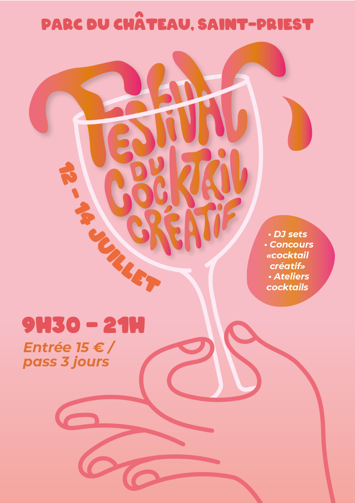
Cocktail Créatif
Dans le cadre d’un projet, nous devions concevoir une affiche intégrant un jeu typographique. J’ai choisi de représenter un festival dédié à la création et à la dégustation de cocktails originaux. Pour cette affiche, j’ai travaillé autour du mouvement du liquide afin d’intégrer le texte directement dans la boisson. Les couleurs fruitées viennent renforcer l’univers frais et coloré des cocktails.
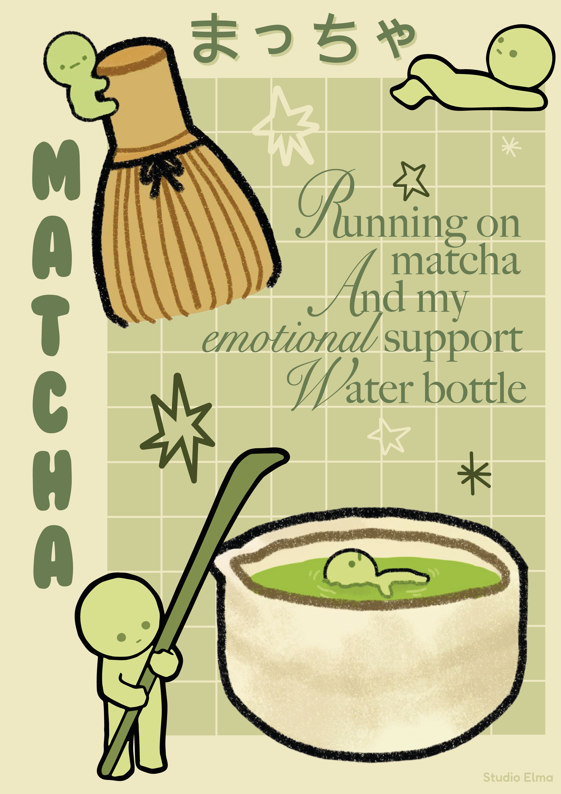
Matcha Smiski
J’ai imaginé cette affiche pour une amie passionnée de Smiski, qui souhaitait décorer son mur avec une création personnalisée. Je me suis inspirée de ses goûts et de son univers, notamment de son intérêt pour le matcha, afin de créer une composition autour de différentes nuances de vert.
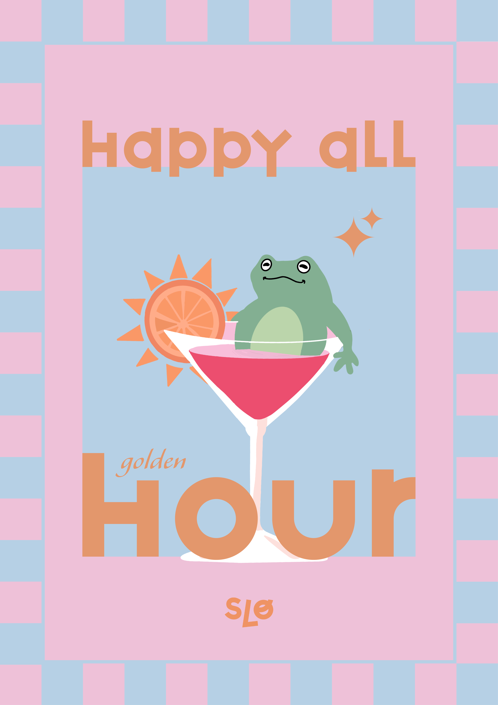
Happy Hour
Cette affiche a été réalisée en duo avec un ami, @romain.zip, pour le café SLO, situé à la Croix-Rousse. Nous nous sommes rendus sur place afin de travailler directement dans le lieu et de nous inspirer de sa direction artistique, notamment des tableaux et affiches déjà présents. Une fois finalisée et imprimée, nous avons offert l’affiche au café. J’ai principalement réalisé l’illustration ainsi que participé à la mise en page.
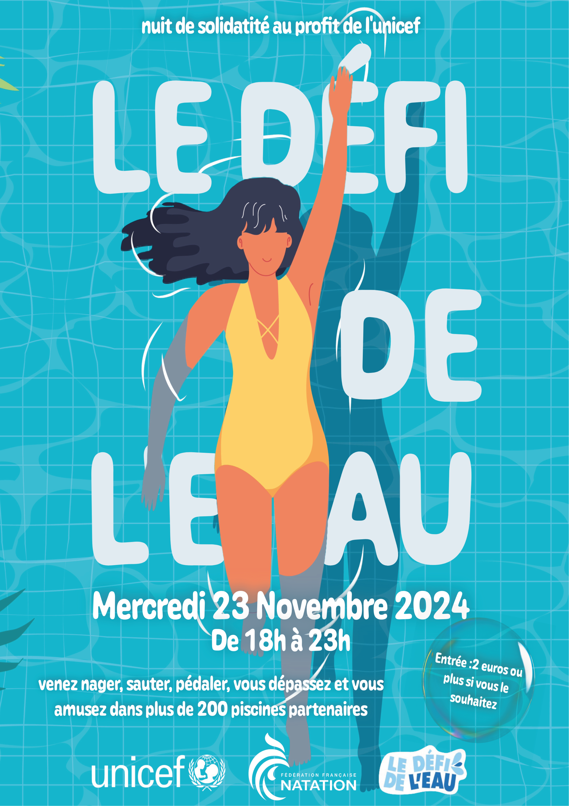
Le Défi de l’eau
Cette affiche a été conçue pour l’événement « Le Défi de l’eau » organisé par l’UNICEF. Celui-ci sensibilise aux enjeux de la préservation de l’eau et de l’accès à cette ressource essentielle, notamment face aux conséquences du changement climatique. L’objectif était de traduire visuellement ces enjeux à travers une affiche destinée à l’événement.
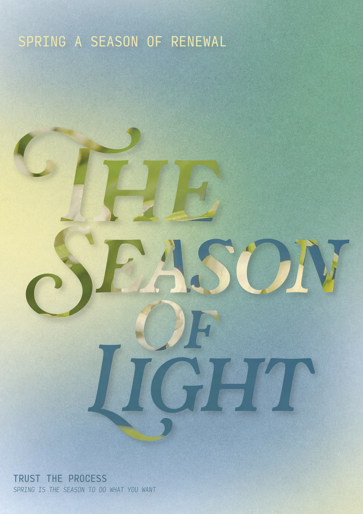
Flowers
Pour cette création, j’ai souhaité expérimenter autour d’un effet miroir et de reflets aquatiques, en m’inspirant de l’aspect de la rosée du matin. L’idée était de retranscrire une atmosphère douce et poétique, en jouant avec les reflets et la lumière.
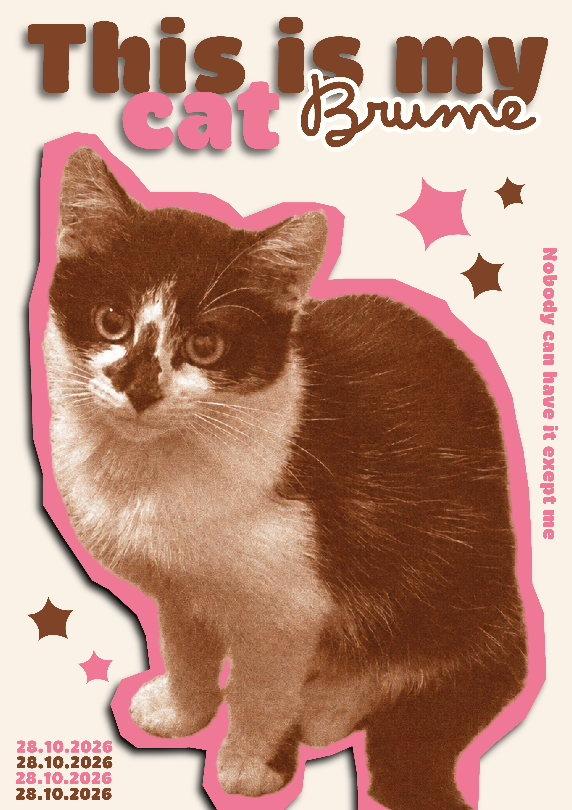
Brume
J’ai créé cette affiche pour mettre à l’honneur mon petit chat Brume, que je venais tout juste de recueillir. Un projet personnel réalisé pour immortaliser son arrivée dans ma vie.
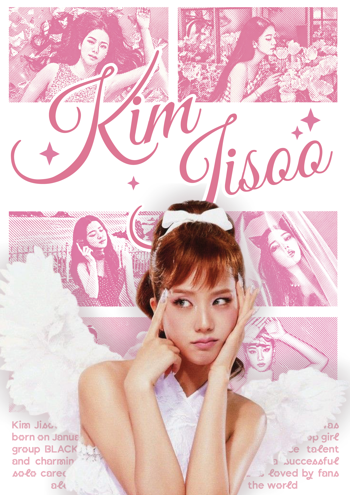
Pink Jisoo
Jisoo est ma chanteuse préférée. À l’occasion de son anniversaire, j’ai souhaité réaliser une affiche à son effigie, en m’inspirant de l’identité visuelle de son groupe d’origine, BLACKPINK. J’ai choisi de conserver les couleurs emblématiques du groupe : le rose et le noir. Le rose représente ici son côté doux et mignon, tandis que le noir évoque son côté plus badass et affirmé. Cette opposition m’a permis d’imaginer deux affiches distinctes, chacune mettant en avant une facette différente.
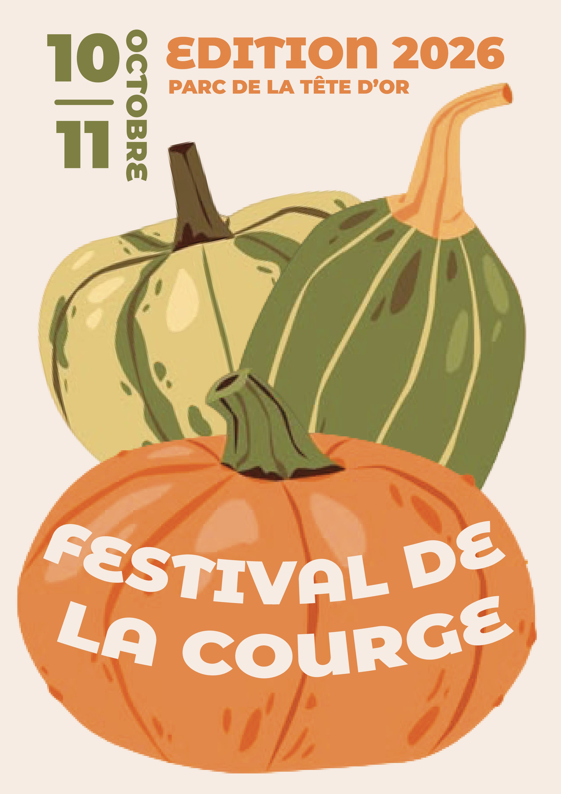
Courges
En tant qu’habitante de Lyon, je connais le Festival de la courge, un événement qui marque pour moi le début de l’automne dans la ville. Pour cette affiche, j’ai souhaité partir sur une composition assez classique, tout en sortant de mon univers colorimétrique habituel. J’ai choisi des tons orangés et verts, inspirés des courges et des couleurs des feuilles en automne. L’objectif était de retranscrire l’ambiance chaleureuse et saisonnière de cet événement à travers une identité visuelle automnale.
Flyers
Faut-il être fou pour créer ?
Dans le cadre du projet Philomag, j’ai conçu un flyer A5 recto-verso autour de la question philosophique « Faut-il être fou pour créer ? ». J’ai joué sur le contraste entre un univers classique et une explosion de couleurs pour symboliser l’opposition entre les normes sociales et la liberté créative. L’objectif était de questionner les idées reçues sur la créativité à travers une composition graphique expressive et percutante.
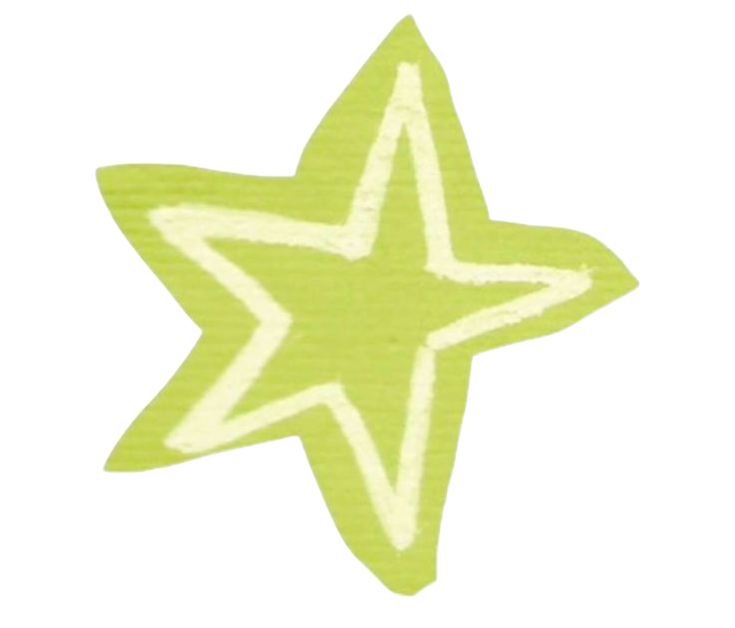
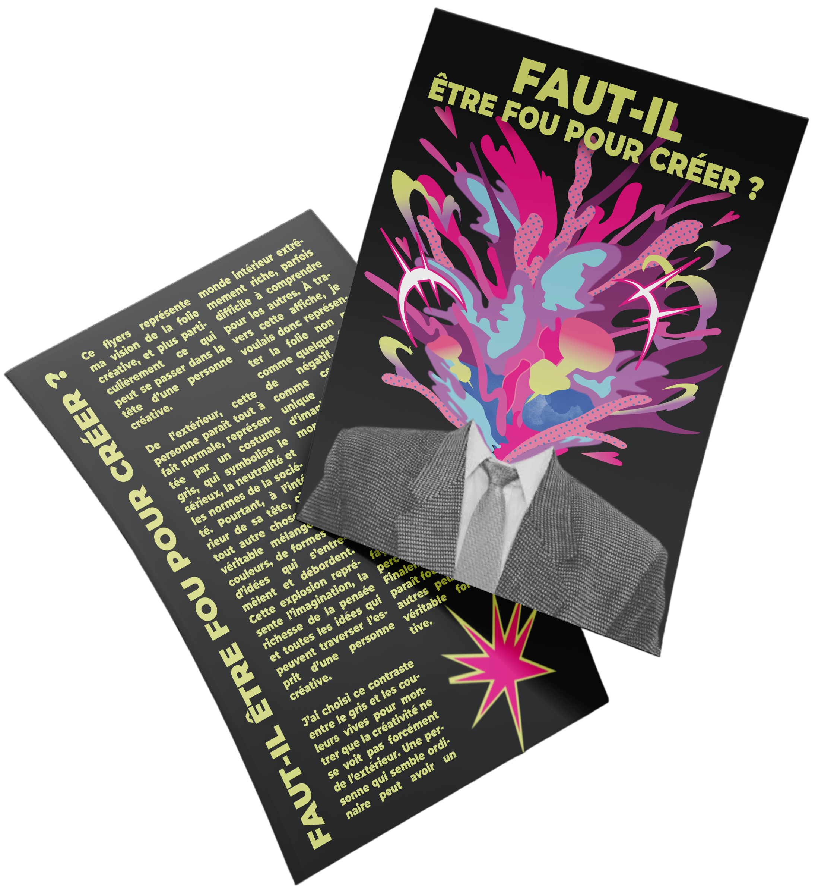
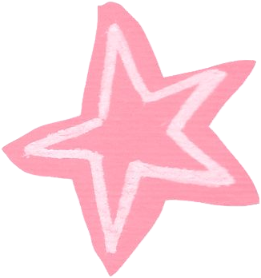